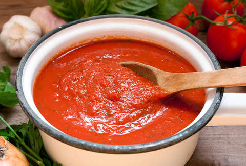
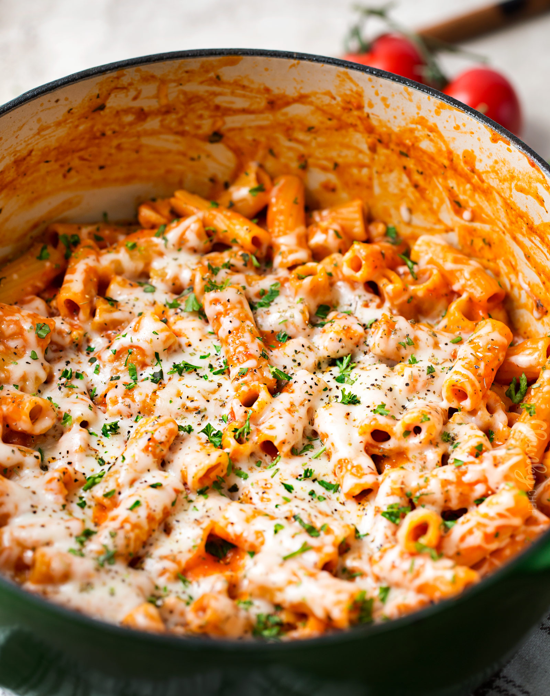

مقادير الصوص الأحمر :
3 طماطم مقشره ومطحونه
بصله صغيره مفرومه
حبتين ثوم مهروس
شوية زيت زيتون
ملعقه كبيره اوريجانو
ملعقه معجون طماطم
مكعب ماجي
طريقة عمل صوص الطماطم :
نحمس البصل مع الزيت ثم نضع الثوم ونحرك سريعا ثم نضع
الماجي والاوريجانو ونسكب الطماطم والمعجون وتحرك جيدا ونخفف على النار ونتركها 5 دقائق تقريبا حتى تتسبك.

للباستا :
دجاج أو لحم أو روبيان
فلفل أخضر
فطر
جبن موزاريلا
جبن بارميزان ( لو ماتوفر مو مشكله يمكن الاستغناء عنه )
ويمكن اضافة الكوسا او الزيتون او البروكلي
معكرونة مسلوقه الكميه اللي تناسبكم
لعمل الباستا :
نحط اربع مكعبات زبده يعني تقريبا ملعقه ونص زبده ونحط عليها الدجاج والخضار
ونخلي النار عاليه مره لحد ماتحسون ان الدجاج نضج نحط الباستا
ونقلبها شوي مع الخضار ثم نحط الصوص الأحمر والأبيض وجبن البارميزان
ونمزجهم مع الباستا كويس
ثم اخر شي نحط شوية جبن موزاريلا ونقلبه لما يذوب وبالعافيه
